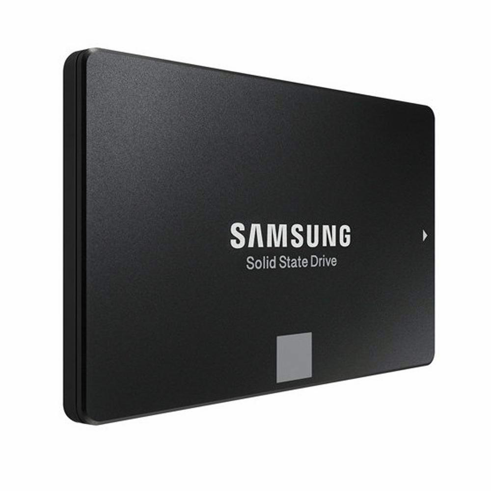

|  | A solid-state drive (SSD) is a solid-state storage device that uses integrated circuit assemblies to store data persistently, typically using flash memory, and functioning as secondary storage in the hierarchy of computer storage. It is also sometimes called a semiconductor storage device, a solid-state device or a solid-state disk, even though SSDs lack the physical spinning disks and movable read–write heads used in hard disk drives (HDDs) and floppy disks. |
Compared with electromechanical drives, SSDs are typically more resistant to physical shock, run silently, and have higher IOPS and lower latency.[3] SSDs store data in semiconductor cells. As of 2019, cells can contain between 1 and 4 bits of data. SSD storage devices vary in their properties according to the number of bits stored in each cell, with single-bit cells ("Single Level Cells" or "SLC") being generally the most reliable, durable, fast, and expensive type, compared with 2- and 3-bit cells ("Multi-Level Cells/MLC" and "Triple-Level Cells/TLC"), and finally quad-bit cells ("QLC") being used for consumer devices that do not require such extreme properties and are the cheapest per gigabyte of the four. In addition, 3D XPoint memory (sold by Intel under the Optane brand) stores data by changing the electrical resistance of cells instead of storing electrical charges in cells, and SSDs made from RAM can be used for high speed, when data persistence after power loss is not required, or may use battery power to retain data when its usual power source is unavailable. Hybrid drives or solid-state hybrid drives (SSHDs), such as Apple's Fusion Drive, combine features of SSDs and HDDs in the same unit using both flash memory and spinning magnetic disks in order to improve the performance of frequently-accessed data. Bcache achieves a similar effect purely in software, using combinations of dedicated regular SSDs and HDDs. |
|